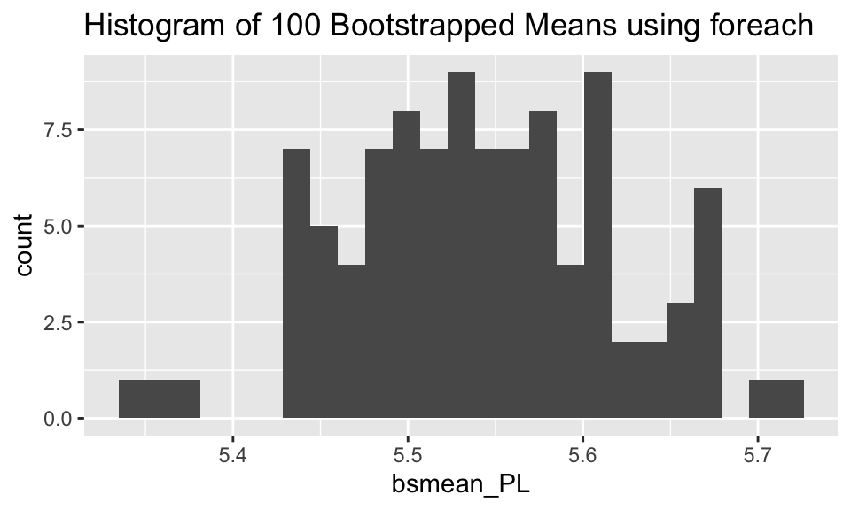

Chapter 10 Misc
10.1 11/26/19 Agenda
- API / authenticating
- parallel computing
- cloud computing
reticulate(Python in R!)- SQL
10.2 API

Figure 1.2: xkcd, https://xkcd.com/1481/
What is an API? (Application Programming Interface)
Think of an API as a restaurant menu. The menu provides a list of what the restaurant has to offer, and you order off the menu by choosing the dish that you want. After you order, the restaurant figures out how to bring the food from the kitchen to your table in the way that you’ve specified.
An API is an intermediary that allows two applications to talk to one another. It is not the database or the server, instead it is the code that allows communication.
Examples of APIs
When you use an app on your phone, the app connects to the internet and sends information to a server somewhere. The server retrieves the data, interprets is, does what it does, and sends it back to you. The application which takes the data from the server and presents it to you in a readable way is an API.
Let’s say you are booking a flight on United. You choose all the details, you interact with the airline’s website. BUT INSTEAD, what if you are interacting with a software like Expedia? Then Expedia has to talk to United’s API to get all the information about available flights, costs, seats, etc.
If you’ve ever been to a third party site and clicked on “Share on Facebook” or “Share on Twitter” your third party site is communicating with the Facebook API or the Twitter API.
You sign up to go to a concert, and StubHub asks whether you want to add the concert to your Google calendar. StubHub needs to talk to Google via Google’s API.
What if you want some Twitter data? How might you get it? Well, you could email Twitter and ask someone for it. Instead Twitter provides information about how their data is stored, and allows you to query their data in an automated way.

Figure 1.3: Image taken from https://rigor.com/blog/what-is-an-api-a-brief-intro
10.3 Parallel Computing
To demonstrate what parallel computing is, we’ll perform tasks that are embarrassingly parallel which means there is no dependency or communication between the parallel tasks. Again, parallel computing can be powerful in ways that link computational tasks in complicated ways. But we believe that as a first pass at teaching parallel computing, we should teach the parallel structure before bringing in dependence across the parallel tasks. Examples of embarrassingly parallel algorithms include: Monte Carlo analysis, bootstrapping, growing trees for Random Forests, group_by analyses, and cross-validation. Additionally, data science methods increasingly use randomized algorithms which can often be written in parallel.
Indeed, it isn’t always easy to know when to use a parallel construction. Because of existing overhead processes (e.g., copying data across many threads, bring results together, etc.) an algorithm run on 10 parallel strands will not reduce an original (non-parallel) run time by 10-fold. Figuring out when a parallel implementation is appropriate is beyond the scope of this blog but should be carefully considered before embarking on large projects.
Some parallel examples
Before running code in parallel, it is valuable to know how many cores your computer has to work with. Note that the detectCores function will provide information about the specific device you are using (logical = FALSE tells you only the physical cores which is likely what you want). Note that after makeCluster the separate threads have information. After stopCluster, the code is no longer connecting to the cluster structure.
## [1] 8## node of a socket cluster on host 'localhost' with pid 38688## Error in summary.connection(connection): invalid connectionEmbarrassingly embarrassing example
In the example below, we generate some Cauchy data and find the max of each sample. Note that for the current device there are 8 cores, so the process will happen 100/P = 12.5 times on each core. The second argument of clusterApply is a sequence of numbers that gets passed to each worker as the (first) argument of func1. Below, I’ve specified that the value 50 (number of reps) should be passed separately to 100 different workers.
W <- 100
P <- detectCores(logical=FALSE)
cl <- makeCluster(P)
func1 <- function(reps){
max(rcauchy(reps))
}
clusterApply(cl, rep(50,W), fun = func1) %>% head(3)## [[1]]
## [1] 17.37151
##
## [[2]]
## [1] 20.73513
##
## [[3]]
## [1] 13.80041There are many R functions which implement parallel processing. For example, the same code from above can be processed using foreach.
library(doParallel)
cl <- parallel::makeCluster(P)
doParallel::registerDoParallel(cl)
foreach(reps = rep(50, 100), .combine = 'c') %dopar% {
max(rcauchy(reps))
} %>% head(3)## [1] 5.881646 5.374148 43.051650Example bootstrapping
A slightly less embarrassingly parallel example comes with bootstrapping. Below we have used parallel implementation to bootstrap the mean of the iris data petal length (Virginica only).
cl <- parallel::makeCluster(P)
doParallel::registerDoParallel(cl)
bsmean_PL <- foreach(i = 1:100, .combine = 'c') %dopar% {
mean(sample(iris_bs$Petal.Length, replace = TRUE))
}
bootstrap <- tibble(bsmean_PL)
stopCluster(cl)
ggplot(bootstrap, aes(x = bsmean_PL)) + geom_histogram(bins = 25) + ggtitle("Histogram of 100 Bootstrapped Means using foreach")
Spark and sparklyr
Some of you may be familiar with Apache Spark which is an open-source product for distributed cluster-computing. You may want to learn more about its capabilities, including scheduling workflow, dispatching tasks, and consolidating end results. While incredibly powerful, there has historically been a steep learning curve to getting R to work smoothly with a Spark connection. Recently, RStudio has come out with a new package sparklyr which integrates R and Spark seamlessly. Note that in the example below, we’ve set up a local connection just for the purposes of the example. For your work, you may want to connect to a cluster or cloud space with many cores.
The RStudio sparklyr webpage provides a plethora of good examples demonstrating the sophistication and power of the technology. sparklyr has particularly strong connections to the suite of tidyverse functions. Indeed, the power of sparklyr is more about distributing the computing than about parallelizing it. For example, with sparklyr the computations are delayed until you need the results. Additionally, Spark is doing the heavy lifting and only at the very end (when your results are called) do you need to worry about the size of the table, results, or computational space. The example below repeats the bootstrapping work that was done previously.
Note, it is important to look at your data structures and variables names. For example, when copying the local dataframe iris_samps to the remote data source called iris_samps_tbl, the variable Petal.Length was changed to Petal_Length.
library(sparklyr)
spark_install()
sc <- spark_connect(master = "local")
n_sim = 100
iris_samps <- iris %>% dplyr::filter(Species == "virginica") %>%
sapply(rep.int, times=n_sim) %>% cbind(replicate = rep(1:n_sim, each = 50)) %>%
data.frame() %>%
dplyr::group_by(replicate) %>%
dplyr::sample_n(50, replace = TRUE)
iris_samps_tbl <- copy_to(sc, iris_samps)
iris_samps_tbl %>%
spark_apply(function(x) {mean(x$Petal_Length)},
group_by = "replicate") %>%
ggplot(aes(x = result)) + geom_histogram(bins = 20) + ggtitle("Histogram of 100 Bootstrapped Means using sparklyr")
For our particular application, the adept reader has probably noticed that the average of a variable using group_by is a very quick and easy task for dplyr. Indeed, the use of sparklyr above is overkill and is presented only as a way to demonstrate using sparklyr. If you are working with big datasets that require large computing infrastructure, the RStudio help pages on sparklyr are fantastic. Additionally, there are many instances of working with Spark in the wild, and you might consider working through someone else’s Spark analysis like this fantastic example on splitting up large amounts of raw DNA sequencing to get data for a given genetic location.
iris_samps %>% dplyr::group_by(replicate) %>%
dplyr::summarize(result = mean(Petal.Length)) %>%
ggplot(aes(x = result)) + geom_histogram(bins = 25) + ggtitle("Histogram of 100 Bootstrapped Means using dplyr")
While an introduction to parallel and cloud computing will help you become more adept and less apprehensive about using the tools, there is also a recognition that sufficient background in computer science is needed to be able to fully engage with principles of high performance computing.
Learn more
- Hana Sevcikova Introduction to parallel computing with R useR 2017 in Brussels, tutorial here
sparklyrto do parallel cross-validation- https://www.rstudio.com/resources/cheatsheets/
- Great blog Two Flavors of Parallel Simulation by Mark LeBoeuf comparing different ways to process code in parallel.
10.4 Cloud Computing
The R package parallel is designed to send tasks to each of multiple cores. Today’s computers (even small laptops!) typically have multiple cores, and any server or cloud computing infrastructure can easily handle dozens or hundreds of parallel tasks. The structure of the R parallel implementation sends tasks to workers that don’t talk to one another until compiling their results at the end. In her 2017 UseR! tutorial, Hana Sevcikova describes the function of workers which run code/functions/iterations separately before results are subsequently combined.

Figure 1.7: Image from Sevcikova UseR! 2017 [tutorial on parallel computing](https://rawgit.com/PPgp/useR2017public/master/tutorial.html
As computing infrastructure becomes more sophisticated, it is important to have the language to describe how connected components work. Parallel processing allows for a conversation on the differences between distributed computing, cluster computing, and grid computing, and generally, the framework of high performance computing. The benefit of parallel computing as an introduction to the larger infrastructure is that the task of each worker is clear, important, and easy to describe.
10.5 reticulate
Connect to Python within RStudio
For many statisticians, the go-to software language is R. However, there is no doubt that Python is a very important language in data science. Why not do both??
library(tidyverse)
library(reticulate)
use_virtualenv("r-reticulate")
reticulate::import("statsmodels")## Module(statsmodels)I can run Python inside R??


pandasfor data wrangling.
- In R, the chunk is specified to be a Python chunk (RStudio is now running Python).
```{python}
import pandas
flights = pandas.read_csv("flights.csv")
flights = flights[flights["dest"] == "ORD"]
flights = flights[['carrier', 'dep_delay', 'arr_delay']]
flights = flights.dropna()
```A view of the Python chunk which is actually run:
Learn about the dataset
```{python}
flights.shape
flights.head(3)
flights.describe()
```## (12590, 3)## carrier dep_delay arr_delay
## 4 UA -4.0 12.0
## 5 AA -2.0 8.0
## 22 AA -1.0 14.0## dep_delay arr_delay
## count 12590.000000 12590.000000
## mean 11.709770 2.917951
## std 39.409704 44.885155
## min -20.000000 -62.000000
## 25% -6.000000 -22.000000
## 50% -2.000000 -10.000000
## 75% 9.000000 10.000000
## max 466.000000 448.000000Computations using pandas
```{python}
flights = pandas.read_csv("flights.csv")
flights = flights[['carrier', 'dep_delay', 'arr_delay']]
flights.groupby("carrier").mean()
```flights = pandas.read_csv("flights.csv")
flights = flights[['carrier', 'dep_delay', 'arr_delay']]
flights.groupby("carrier").mean()## dep_delay arr_delay
## carrier
## AA 8.586016 0.364291
## AS 5.804775 -9.930889
## DL 9.264505 1.644341
## UA 12.106073 3.558011
## US 3.782418 2.129595From Python chunk to R chunk
py$xaccesses anxvariable created within Python from Rr.xaccesses anxvariable created within R from Python
From R chunk to Python chunk
## # A tibble: 6 x 10
## carat cut color clarity depth table price x y z
## <dbl> <ord> <ord> <ord> <dbl> <dbl> <int> <dbl> <dbl> <dbl>
## 1 0.23 Ideal E SI2 61.5 55 326 3.95 3.98 2.43
## 2 0.21 Premium E SI1 59.8 61 326 3.89 3.84 2.31
## 3 0.23 Good E VS1 56.9 65 327 4.05 4.07 2.31
## 4 0.290 Premium I VS2 62.4 58 334 4.2 4.23 2.63
## 5 0.31 Good J SI2 63.3 58 335 4.34 4.35 2.75
## 6 0.24 Very Good J VVS2 62.8 57 336 3.94 3.96 2.48Python chunks
Note that we’re calling Python code on an R object.
## carat depth ... y z
## count 53940.000000 53940.000000 ... 53940.000000 53940.000000
## mean 0.797940 61.749405 ... 5.734526 3.538734
## std 0.474011 1.432621 ... 1.142135 0.705699
## min 0.200000 43.000000 ... 0.000000 0.000000
## 25% 0.400000 61.000000 ... 4.720000 2.910000
## 50% 0.700000 61.800000 ... 5.710000 3.530000
## 75% 1.040000 62.500000 ... 6.540000 4.040000
## max 5.010000 79.000000 ... 58.900000 31.800000
##
## [8 rows x 7 columns]import statsmodels.formula.api as smf
model = smf.ols('price ~ carat', data = r.diamonds).fit()
print(model.summary())## OLS Regression Results
## ==============================================================================
## Dep. Variable: price R-squared: 0.849
## Model: OLS Adj. R-squared: 0.849
## Method: Least Squares F-statistic: 3.041e+05
## Date: Mon, 25 Nov 2019 Prob (F-statistic): 0.00
## Time: 10:58:53 Log-Likelihood: -4.7273e+05
## No. Observations: 53940 AIC: 9.455e+05
## Df Residuals: 53938 BIC: 9.455e+05
## Df Model: 1
## Covariance Type: nonrobust
## ==============================================================================
## coef std err t P>|t| [0.025 0.975]
## ------------------------------------------------------------------------------
## Intercept -2256.3606 13.055 -172.830 0.000 -2281.949 -2230.772
## carat 7756.4256 14.067 551.408 0.000 7728.855 7783.996
## ==============================================================================
## Omnibus: 14025.341 Durbin-Watson: 0.986
## Prob(Omnibus): 0.000 Jarque-Bera (JB): 153030.525
## Skew: 0.939 Prob(JB): 0.00
## Kurtosis: 11.035 Cond. No. 3.65
## ==============================================================================
##
## Warnings:
## [1] Standard Errors assume that the covariance matrix of the errors is correctly specified.Running just Python

Full disclosure
reticulate is not always trivial to set up. Indeed, I’ve had trouble figuring out which Python version is talking to R and where different module versions live.
10.6 SQL (in R)
Note that there exists an R interface to work with SQL commands from within an R Markdown file. For consistency with the class notes, we’ve continued to use the R Markdown structure to demonstrate the course material.
(Taken from the Teach Data Science blog: https://teachdatascience.com/sql/, this entry written by Nick Horton)
SQL (pronounced sequel) stands for Structured Query Language; it is a language designed to manage data in a relational database system.
We will use a public facing MySQL database containing wideband acoustic immittance (WAI) measures made on normal ears of adults. (The project is funded by the National Institutes of Health, NIDCD, and hosted on a server at Smith College, PI Susan Voss, R15 DC014129-01.) The database was created to enable auditory researchers to share WAI measurements and combine analyses over multiple datasets.
We begin by demonstrating how SQL queries can be sent to a database. It is necessary to set up a connection using the dbConnect() function.
library(mosaic)
library(RMySQL)
con <- dbConnect(
MySQL(), host = "scidb.smith.edu", user = "waiuser",
password = "smith_waiDB", dbname = "wai")Next a series of SQL queries can be sent to the database using the DBI::dbGetQuery() function: each query returns an R dataframe.
## [1] "data.frame"There are multiple tables within the wai database.
## Tables_in_wai
## 1 Measurements
## 2 PI_Info
## 3 SubjectThe EXPLAIN command describes the ten field names (variables) in the PI_Info table.
## Field Type Null Key Default Extra
## 1 Identifier varchar(20) YES <NA>
## 2 PI_Year int(11) YES <NA>
## 3 PI varchar(500) YES <NA>
## 4 Affiliation varchar(500) YES <NA>
## 5 Email varchar(30) YES <NA>
## 6 Title varchar(140) YES <NA>
## 7 Pub varchar(10000) YES <NA>
## 8 Date char(20) YES <NA>
## 9 URL varchar(140) YES <NA>
## 10 PI_Notes text NO <NA>The SELECT statement can be used to select all fields for eight observations in the Measurements table.
## Identifier Sub_Number Session Left_Ear MEP Instrument Freq Absorbance
## 1 Abur_2014 1 1 0 -5 1 210.938 0.0451375
## 2 Abur_2014 1 1 0 -5 1 234.375 0.0441247
## 3 Abur_2014 1 1 0 -5 1 257.812 0.0495935
## 4 Abur_2014 1 1 0 -5 1 281.250 0.0516088
## 5 Abur_2014 1 1 0 -5 1 304.688 0.0590836
## 6 Abur_2014 1 1 0 -5 1 328.125 0.0628038
## 7 Abur_2014 1 1 0 -5 1 351.562 0.0682962
## 8 Abur_2014 1 1 0 -5 1 375.000 0.0738373
## Zmag Zang Canal_Area
## 1 110638000 -0.228113 NA
## 2 100482000 -0.230561 NA
## 3 90561100 -0.230213 NA
## 4 83515500 -0.230959 NA
## 5 77476800 -0.229652 NA
## 6 71229100 -0.230026 NA
## 7 66615500 -0.229576 NA
## 8 61996200 -0.229327 NAMore interesting and complicated SELECT calls can be used to undertake grouping and aggregation. Here we calculate the sample size for each study
dbGetQuery(con,
"SELECT Identifier, count(*) AS NUM FROM Measurements GROUP BY Identifier ORDER BY NUM")## Identifier NUM
## 1 Sun_2016 2604
## 2 Shaver_2013 2880
## 3 Feeney_2017 3162
## 4 Voss_1994 5120
## 5 Liu_2008 5520
## 6 Werner_2010 7935
## 7 Rosowski_2012 14384
## 8 Voss_2010 14880
## 9 Abur_2014 21328
## 10 Groon_2015 35469
## 11 Shahnaz_2006 58776
## 12 Lewis_2015 114716Accessing a database using dplyr commands
Alternatively, a connection can be made to the server by creating a series of dplyr tbl
objects. Connecting with familiar dplyr syntax is attractive because, as Hadley Wickham has noted, SQL and R have similar syntax (but sufficiently different to be confusing).
The setup process looks similar.
db <- src_mysql(dbname = "wai", host = "scidb.smith.edu", user = "waiuser",
password="smith_waiDB")
Measurements <- tbl(db, "Measurements")
class(Measurements)## [1] "tbl_MySQLConnection" "tbl_dbi" "tbl_sql"
## [4] "tbl_lazy" "tbl"We explore the PI_Info table using the collect() function used to force computation on the database (and return the results). One attractive aspect of database systems is that they feature lazy evaluation, where computation is optimized and postponed as long as possible.
## # Source: lazy query [?? x 1]
## # Database: mysql 5.5.58-0ubuntu0.14.04.1-log
## # [waiuser@scidb.smith.edu:/wai]
## total
## <dbl>
## 1 12## Identifier PI_Year
## 1 Werner_2010 2010
## 2 Voss_1994 1994
## 3 Lewis_2015 2015
## 4 Voss_2010 2010
## 5 Sun_2016 2016
## 6 Shaver_2013 2013
## 7 Rosowski_2012 2012
## 8 Liu_2008 2008
## 9 Abur_2014 2014
## 10 Feeney_2017 2017
## 11 Groon_2015 2015
## 12 Shahnaz_2006 2006
## PI
## 1 Douglas Keefe
## 2 Susan E. Voss
## 3 James D. Lewis; Stephen Neely
## 4 Susan E. Voss
## 5 Xiao-Ming Sun
## 6 Mark D. Shaver, Xiao-Ming Sun
## 7 John J. Rosowski
## 8 Yi-Wen Liu; Chris A. Sanford; John C. Ellison; Denis F. Fitzpatrick; Michael P. Gorga; Douglas H. Keefe
## 9 Defne Abur; Nicholas J. Horton; Susan E. Voss
## 10 M. Patrick Feeney; Douglas H. Keefe
## 11 Stephen Neely
## 12 Navid Shahnaz; Karin Bork
## Affiliation
## 1 Boys Town National Research Laboratory
## 2 Smith College, formerly ATT Bell Labs
## 3 Boys Town National Research Laboratory
## 4 Smith College
## 5 Wichita State University
## 6 Wichita State University
## 7 Eaton-Peabody Laboratory, Massachusetts Eye and Ear Infirmary, Boston
## 8 Boys Town National Research Hospital
## 9 Smith College
## 10 National Center for Rehabilitative Auditory Research (NCRAR) and Boys Town National Research Hospital
## 11 Boys Town National Research Hospital
## 12 University of British Columbia
## Title
## 1 Ear-Canal Wideband Acoustic Transfer Functions of Adults and Two- to Nine-Month-Old Infants
## 2 Measurement of acoustic impedance and reflectance in the human ear canal
## 3 Non-invasive estimation of middle-ear input impedance and efficiency
## 4 Posture systematically alters ear-canal reflectance and DPOAE properties
## 5 Wideband acoustic immittance: Normative study and test-retest reliability of tympanometric measurements in adults
## 6 Wideband energy reflectance measurements: Effects of negative middle ear pressure and application of a pressure compensation procedure
## 7 Ear-Canal Reflectance, Umbo Velocity, and Tympanometry in Normal-Hearing Adult
## 8 Wideband absorbance tympanometry using pressure sweeps: System development and results on adults with normal hearing
## 9 Intrasubject Variability in Power Reflectance
## 10 Normative wideband reflectance, equivalent admittance at the tympanic membrane, and acoustic stapedius reflex threshold in adults
## 11 Air-Leak Effects on Ear-Canal Acoustic Absorbance
## 12 Wideband Reflectance Norms for Caucasian and Chinese Young Adults
## Pub Date
## 1 Ear and Hearing 9/1/2017
## 2 Journal of the Acoustical Society of America 02/08/2017
## 3 Journal of the Acoustical Society of America 10/10/2018
## 4 Hearing Research 06/05/2018
## 5 Journal of Speech, Language, and Hearing Research 10/31/2017
## 6 The Journal of the Acoustical Society of America 10/06/2018
## 7 Ear and Hearing 11/06/2015
## 8 The Journal of the Acoustical Society of America 6/26/2018
## 9 J Am Acad Audiol 08/24/2016
## 10 Ear and Hearing 06/07/2018
## 11 Ear and Hearing 06/18/2019
## 12 Ear and Hearing 08/24/2016
## URL
## 1 https://www.ncbi.nlm.nih.gov/pubmed/20517155
## 2 https://asa.scitation.org/doi/abs/10.1121/1.408329
## 3 https://asa.scitation.org/doi/abs/10.1121/1.4927408
## 4 https://www.ncbi.nlm.nih.gov/pubmed/20227475
## 5 https://www.ncbi.nlm.nih.gov/pubmed/27517667
## 6 https://www.ncbi.nlm.nih.gov/pubmed/23862811
## 7 http://www.ncbi.nlm.nih.gov/pubmed/21857517
## 8 https://www.ncbi.nlm.nih.gov/pubmed/19206798
## 9 https://www.ncbi.nlm.nih.gov/pubmed/25257718
## 10 https://www.ncbi.nlm.nih.gov/pubmed/28045835
## 11 https://journals.lww.com/ear-hearing/fulltext/2015/01000/Air_Leak_Effects_on_Ear_Canal_Acoustic_Absorbance.16.aspx
## 12 http://journals.lww.com/ear-hearing/Abstract/2006/12000/Wideband_Reflectance_Norms_for_Caucasian_and.15.aspx
## PI_Notes
## 1 Used an ER-1 earphone and ER-7C microphone. Data provided by Doug Keefe and formatted by Susan Voss with help. Lynne Werner is retired. In Subject Table, Sub_Notes=1 means part of 183 subjects included in the means in paper and Sub_Notes=0 means not part of mean in paper.
## 2 Measurements taken with a system using sysid and the Etymotic ER-2 pressure transducer and ER-7c probe microphone.
## 3 Used acoustically calculated areas for absorbance calculations, included in Measurement Table
## 4 No notes
## 5 No notes
## 6 A research version of Titan (Interacoustics) was used. In this study, a total of five reflectance measurements at ambient pressure were taken per ear (detailed in the article). But, results from only two sessions were reported in this article. Included in this database is the second session (baseline), as the normative data.
## 7 No Notes
## 8 No Notes
## 9 Database includes measurements at Position 1 and Channel B only
## 10 Sub_Notes=Boys Town National Lab are data taken by Keefe; Sub_Notes=NCRAR are data taken by Feeney
## 11 First author is Groon, PI for grant is Steve Neely, data collected on system described in Rasetshwane and Neely (2011)
## 12 Impedance angles not available and set to NullNote how the number of rows is unknown (?? at the top of the output above) for the lazy query.
Similarly, we can explore the Subjects table.
## # Source: lazy query [?? x 1]
## # Database: mysql 5.5.58-0ubuntu0.14.04.1-log
## # [waiuser@scidb.smith.edu:/wai]
## total
## <dbl>
## 1 640## # A tibble: 640 x 10
## Identifier Sub_Number Session_Total Age Female Race Ethnicity
## <chr> <chr> <int> <int> <int> <int> <int>
## 1 Voss_2010 1 5 20 1 0 0
## 2 Voss_2010 2 5 39 1 0 0
## 3 Voss_2010 3 5 18 1 0 0
## 4 Voss_2010 4 5 19 1 0 0
## 5 Voss_2010 5 5 21 1 0 0
## 6 Voss_2010 6 5 21 1 0 0
## 7 Voss_2010 7 5 21 1 0 0
## 8 Voss_2010 8 5 42 1 0 0
## 9 Voss_2010 9 5 38 0 0 0
## 10 Voss_2010 10 5 20 1 0 0
## # … with 630 more rows, and 3 more variables: Left_Ear_Status <int>,
## # Right_Ear_Status <int>, Sub_Notes <chr>Let’s explore the Measurements table.
## # Source: lazy query [?? x 1]
## # Database: mysql 5.5.58-0ubuntu0.14.04.1-log
## # [waiuser@scidb.smith.edu:/wai]
## total
## <dbl>
## 1 286774There are more than a quarter million observations.
In the next step, we will download the data from a given subject for a specific study, in this case a paper by Rosowski et al. (2012) entitled “Ear-canal reflectance, umbo velocity, and tympanometry in normal-hearing adults”.
Arbitrarily we choose to collect data from subject number three.
onesubj <-
Measurements %>%
filter(Identifier == "Rosowski_2012", Sub_Number == 3) %>%
collect %>%
mutate(SessionNum = as.factor(Session))
head(onesubj)## # A tibble: 6 x 12
## Identifier Sub_Number Session Left_Ear MEP Instrument Freq Absorbance
## <chr> <int> <int> <int> <dbl> <int> <dbl> <dbl>
## 1 Rosowski_… 3 1 1 NA 1 211. 0.0852
## 2 Rosowski_… 3 1 1 NA 1 234. 0.0903
## 3 Rosowski_… 3 1 1 NA 1 258. 0.112
## 4 Rosowski_… 3 1 1 NA 1 281. 0.103
## 5 Rosowski_… 3 1 1 NA 1 305. 0.129
## 6 Rosowski_… 3 1 1 NA 1 328. 0.136
## # … with 4 more variables: Zmag <dbl>, Zang <dbl>, Canal_Area <dbl>,
## # SessionNum <fct>Finally we can display the results of the measurements as a function of frequency and which ear (left or right) that was used.
onesubj <- mutate(onesubj, Ear = ifelse(Left_Ear == 1, "Left", "Right"))
ggplot(onesubj, aes(x = Freq, y = Absorbance)) + geom_point() +
aes(colour = Ear) + scale_x_log10() + labs(title="Absorbance by ear Rosowski subject 3")We note that a number of relational database systems exist, including MySQL (illustrated here), PostgreSQL, and SQLite. More information about databases within R can be found in the CRAN Databases with R Task View.
Setting up and managing a database is a topic for a different day: here we focused on how SQL can be used within R to access data in a flexible and powerful manner.
Learn more
- https://chance.amstat.org/2015/04/setting-the-stage/ (Setting the stage for data technologies)
- https://www.w3schools.com/sql/sql_intro.asp (Intro to SQL)
- http://www.science.smith.edu/wai-database/home/about/ (WAI SQL Database)
- https://cran.r-project.org/web/views/Databases.html (CRAN Task View on Databases with R)
- https://db.rstudio.com (RStudio Database resources)
- https://dbplyr.tidyverse.org/articles/dbplyr.html (dbplyr package)
10.7 12/10/19 Agenda
- Regular Expressions